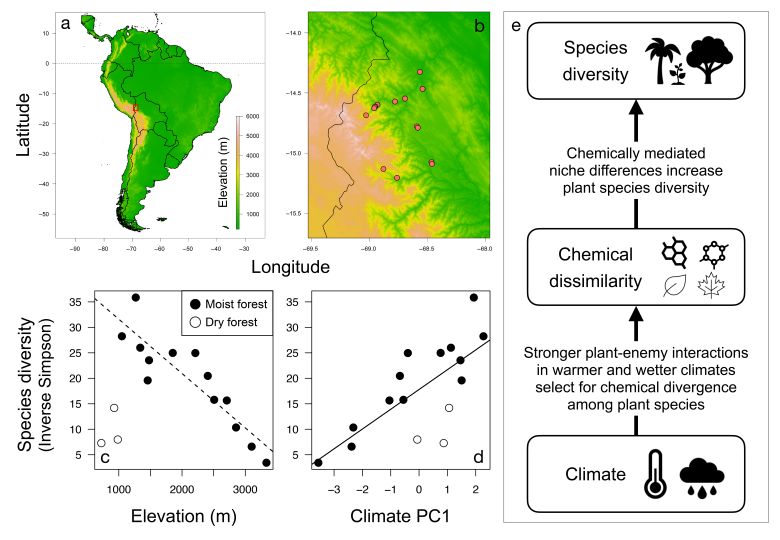
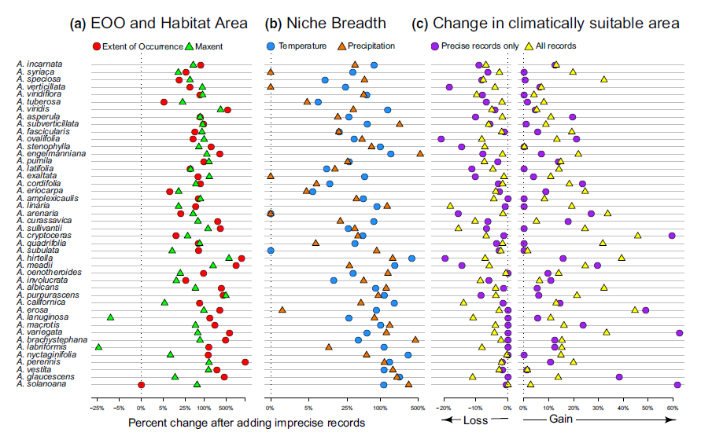
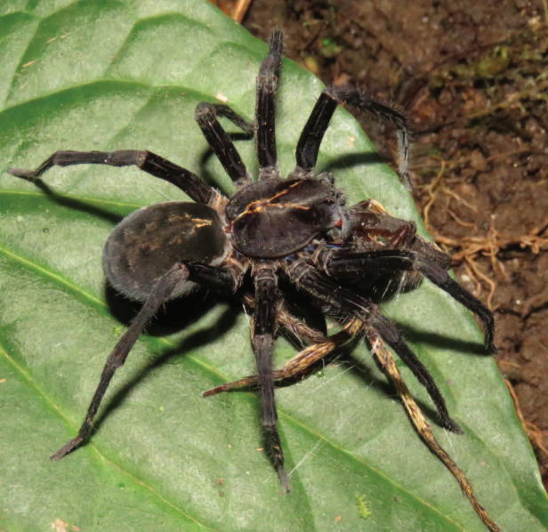
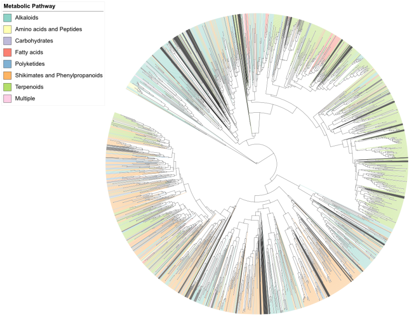

Intro
I'm a Research Biologist, Software Engineer and AWS-certified Machine Learning Specialist with 6+ years of experience building scalable systems, data pipelines, and optimizing database performance. I thrive at the intersection of technology and science, with a passion for cross-functional collaboration and delivering production-quality solutions. My background spans backend development, distributed systems, and mentoring future data scientists.
Education
| 2018–2023 |
Ph.D., Biology and Biomedical Sciences
Washington University in St. Louis
|
| 2014–2016 |
B.Sc., Biological Studies – Summa Cum Laude
Northern Illinois University
GPA: 3.9/4
|
Experience
| 2024 |
Software Developer, Galactic Advisors
|
| 2018–2023 |
Research Biologist (Ph.D.), Washington University in St. Louis
|
| 2023–Present |
Research Program Mentor, Polygence
|
| 2022 |
Visiting Faculty, University of Texas at Austin
|
| 2021–2023 |
Consultant, The BALSA Group
|
Projects
Publications
Testing the role of biotic interactions in shaping elevational
diversity gradients: An ecological metabolomics approach
David Henderson, J. Sebastian Tello, Leslie Cayola, Alfredo F. Fuentes, Belen Alvestegui, Nathan Muchhala, Brian E. Sedio, Jonathan A. Myers
Ecology

|
Including imprecisely georeferenced specimens improves
accuracy of species distribution models and estimates of niche
breadth
Adam B. Smith, Stephen J. Murphy, David Henderson, Kelley D. Erickson
🏆 Wiley Top Cited Paper Award (2025)
Global Ecology and Biogeography

|
Effect of forest succession and microenvironmental variables on the abundance of two
wandering spider species (Araneae: Ctenidae) in a montane tropical forest
Nicolas A. Hazzi, Anna Petrosky, Harshad Karandikar, David Henderson, Natalia Jimenez-Conejo
Journal of Arachnology

|
Biotic Interactions and the Maintenance of Biodiversity Across a Tropical Elevational Gradient
David Henderson
Washington University in St. Louis

|
Tree functional traits as predictors of microburst-associated
treefalls in tropical wet forests
Alana M. Rader, Amy Cottrell, Anna Kudla, Tiffany Lum, David Henderson, Harshad Karandikar, Susan G. Letcher
Wiley: BioTropica

|
Email :
dhenders013@proton.me